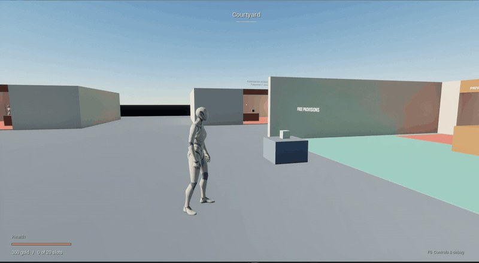
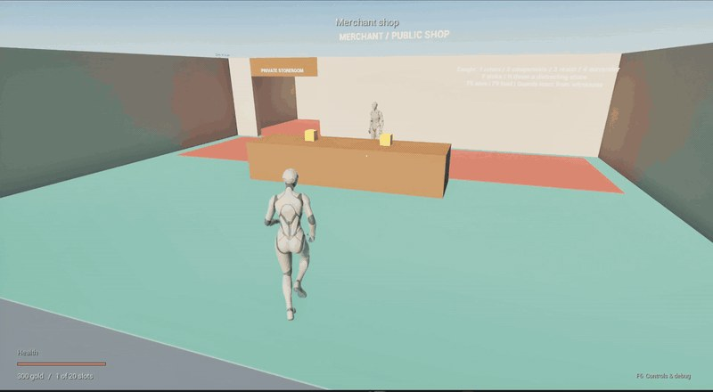
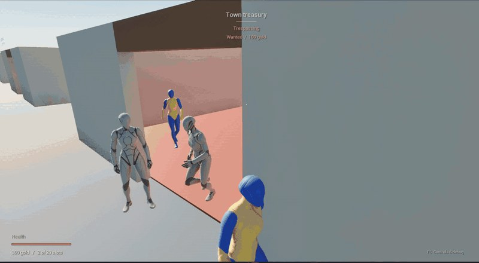
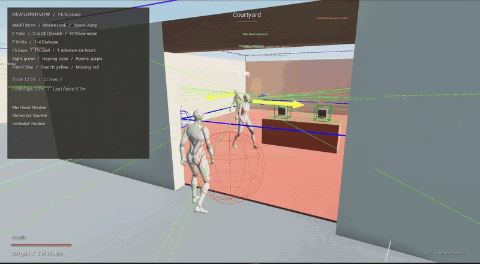
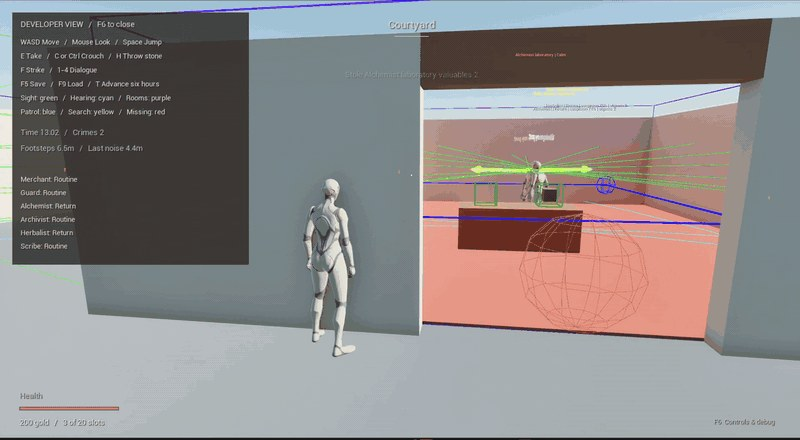
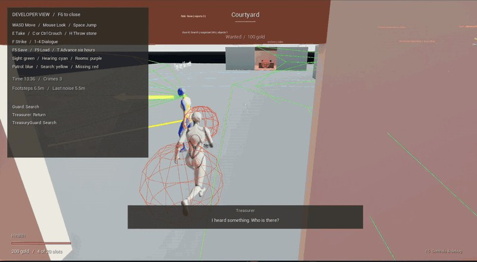
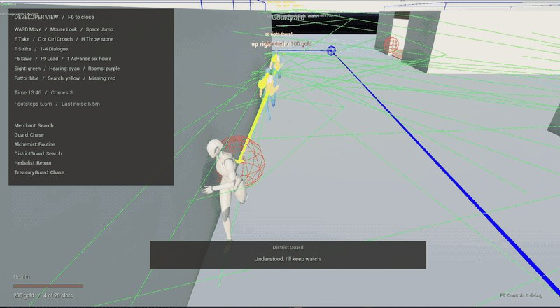

A foundation for further development of an NPC ownership and crime system for RPGs, built with Unreal Engine C++ and Blueprints. This prototype still needs polish and fully implemented, game-specific NPC responses, dialogue, and interactions.
Click a preview to play or pause its GIF. Each download is a looping 800-pixel, 10 fps clip at original speed.

Taking an unowned item without a theft response.
Download GIF · 5 seconds · 3.6 MB · source 7–12s
Owned pickup, alarm, wanted status, and pursuit.
Download GIF · 8 seconds · 5.4 MB · source 15–23s
Multiple responders confront the player; compensation clears the bounty.
Download GIF · 9 seconds · 4.4 MB · source 31–40s
A restricted-room visit triggers the visible hearing response and investigation.
Download GIF · 8 seconds · 5.3 MB · source 56–64s
NPCs discover an absent valuable, share the report, and search the room.
Download GIF · 12 seconds · 6.3 MB · source 64–76s
Two guards pursue together, with AI state and perception debug overlays.
Download GIF · 10 seconds · 7.6 MB · source 98–108s
Search states, guard reports, and separate search assignments remain visible in the debug view.
Download GIF · 11 seconds · 8.5 MB · source 108–119s